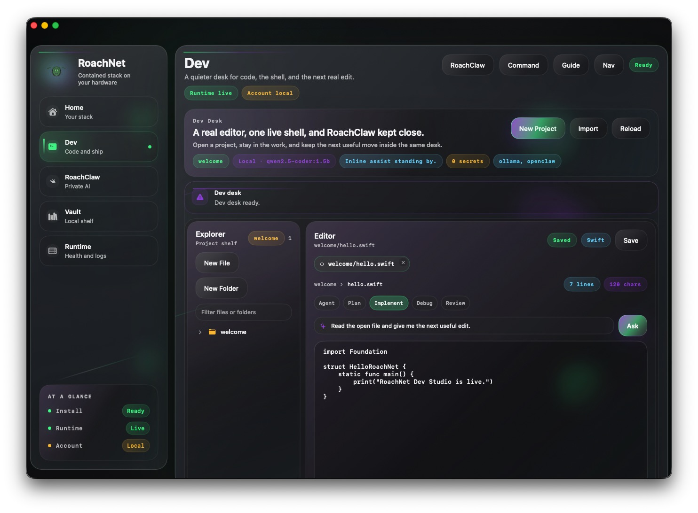
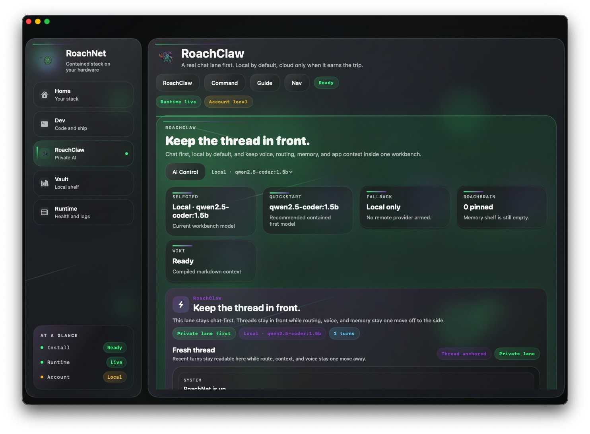
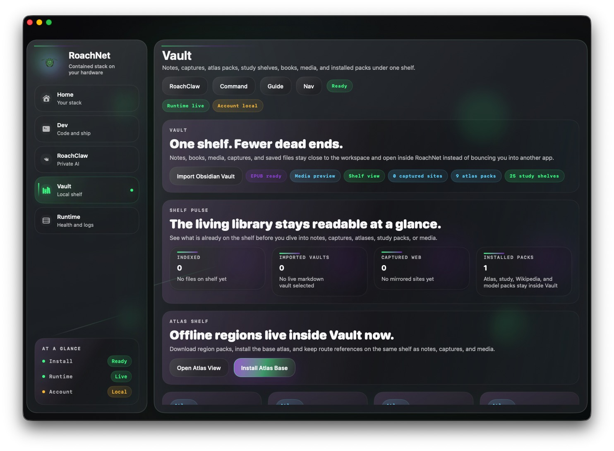
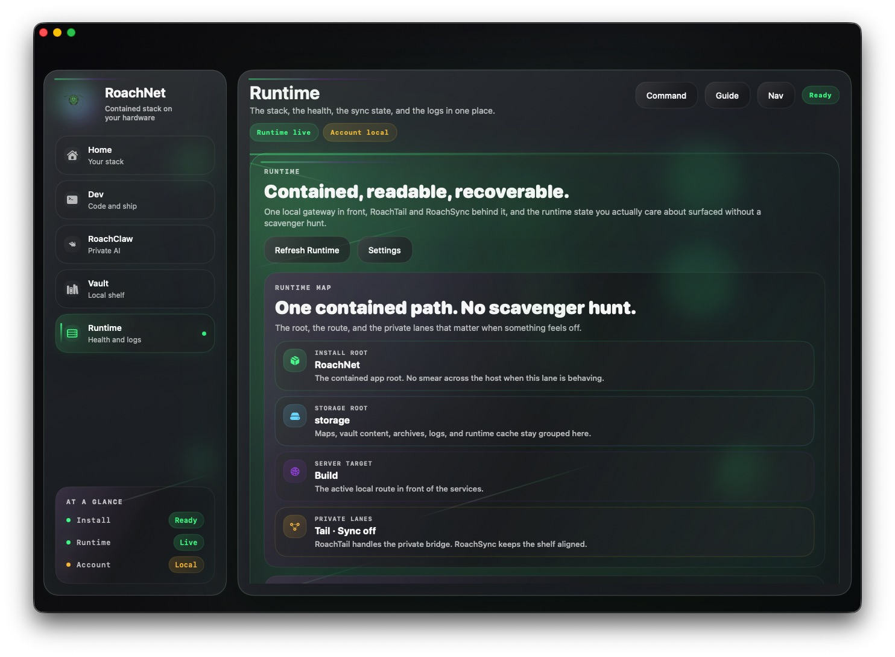

RoachNet
Bring the important stuff home.
RoachNet keeps AI, code, maps, and your archive in one contained root on your machine. RoachClaw is one shortcut or voice request away. The network can help. It does not get to be the floor your work stands on.
Apple Silicon first. iPhone companion close behind. The rest can wait until it is not embarrassing.
brew update && brew tap --force RoachWares/roachnet && brew install --cask roachnet
Mac only. Browsers cannot launch Terminal directly, so this downloads a small helper that opens Terminal and runs the Homebrew install for you.
--:-- --
Checking link
Storage estimate pending
Local time and storage are estimated in-browser until the native app is installed.
Mission
Secure. Portable. Still there offline.
One root on your machine. Easier to trust, easier to move, and still there when the network is not.
Local models, not rented tabs.
RoachClaw stays on your hardware first. Open it anywhere, talk to it anywhere, and only hand over vault or project context when you choose to.
One folder. Clean uninstall.
Everything lives under ~/RoachNet. Easier to move, back up, wipe, and trust.
Quick when called. Quiet when not.
Not always open. That is the point. Pull it up, do the thing, close it.
Native surfaces
Native surfaces that do real work.
Five surfaces. One shell. No scavenger hunt through floating panels and buried status rows.
v1.0.4
Home
The command grid.
Status, quick launch, system reads, and the global RoachClaw summon. In, out, done.

v1.0.4
Dev
The native coding workspace.
Projects, shell, inline RoachClaw help, compiled RoachBrain context, and the command bar stay in one desk. It feels like a real IDE because it behaves like one.

v1.0.4
RoachClaw
The local AI workbench.
Local AI with real model control, global voice input, and full vault context when you allow it. Swap models, see what is loaded, and pull project context without playing prompt telephone.

v1.0.4
Vault
The living shelf.
Notes, maps, education packs, books, captures, music, video, and installed packs stay on one animated shelf. Open a tile and it drops into the right reader, player, or preview lane without leaving RoachNet.

v1.0.4
Runtime
The stack health view.
Runtime, account, RoachTail, and sync reads in one place when you need to know what is actually live.
Where RoachNet fits
Where it actually helps.
It is at its best when you want the stack close, quick, and not dependent on somebody else’s uptime chart.
Reference docs, stems, notes, and AI in one window instead of the usual eleven-tab disaster.
Pack it like a drive. Models, maps, and docs do not care what the hotel Wi-Fi is doing.
When AWS is having a day, you are not. Everything that matters runs on your hardware.
What’s inside RoachNet
Shelves worth installing.
Curated packs that land inside RoachNet instead of scattering across Downloads like loose screws.
Offline atlas packs by region. Useful on day one, essential when signal drops.
Field guides and treatment references, offline. For people who actually prepare.
Docs and ML references next to your editor instead of in a browser tab you will accidentally close.
Curated Wikipedia packs. Not all of it, just the useful parts, indexed and offline.
What RoachNet runs for you
The runtime behind the shell.
The app shell is the front door. The real work is the contained runtime behind it.
Services, helpers, and caches live inside ~/RoachNet. Nothing bleeds across the OS.
Ollama and OpenClaw wired together. You can see exactly how.
Code, shell, and AI assist in one native workspace that already knows where your projects are.
Docs, maps, notes, and archives in one place. Move the folder, everything moves with it.
Download
Get it on your machine.
Pick the install lane you want. The result is the same contained stack on your own hardware.
Same destination, different lane.
Setup.app and Homebrew both land the stack in
~/RoachNet so the app, runtime, vault, and tools stay together.
Support
Keep it sharp.
Independent software stays alive the same way independent records do: somebody keeps showing up to make the next one better.
RoachNet exists because someone kept building the thing they wanted on their own machine.
That buys cleaner priorities, a longer memory, and fewer fake roadmap slides. It also means direct support actually matters.